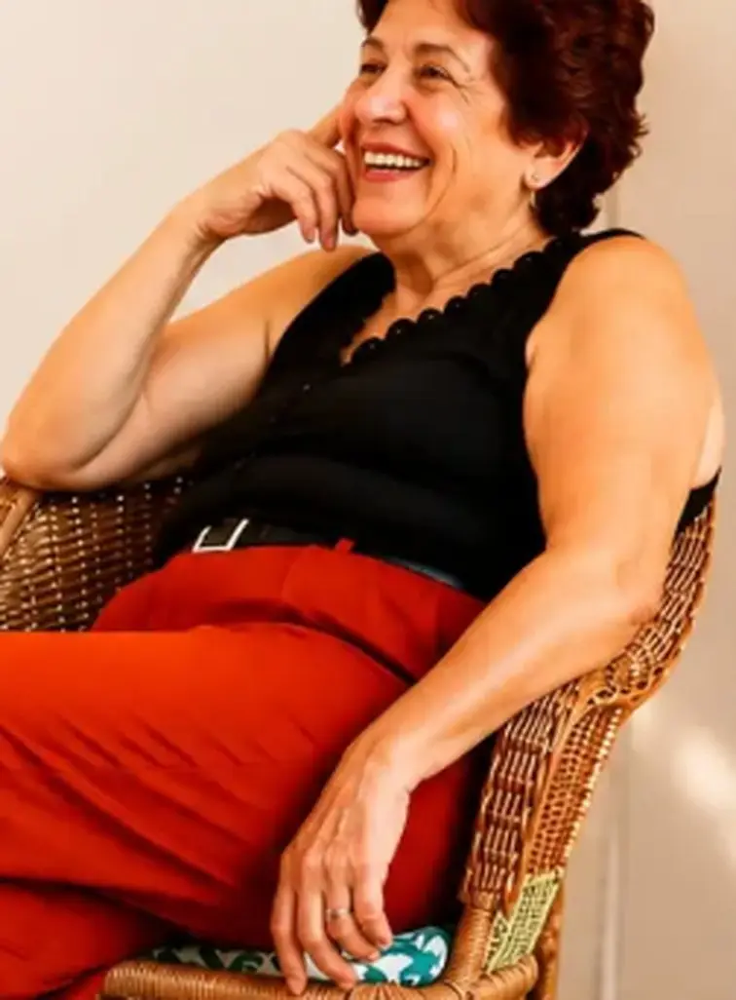
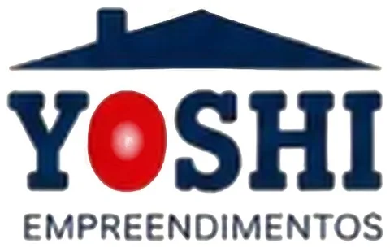

Voluntariado em lares de idosos e comunidades
Visitas a lares de idosos, casas de acolhimento e comunidades, com música, conversa e acolhimento. Seja voluntário
Solidariedade e Cidadania
ONG de voluntariado e doação de alimentos na Grande São Paulo.
Reunimos voluntários, famílias, empresas e entidades em visitas a lares de idosos, doação de cestas básicas e apoio a crianças e comunidades.
Sem fins lucrativosVoluntariado orientadoCooperação formalizada por escrito

Quem somos
O Instituto Yoshitani – Solidariedade e Cidadania é uma organização social sem fins lucrativos da Grande São Paulo. Realizamos ações de voluntariado, campanhas assistenciais e apoio a projetos sociais, lares de idosos, instituições infantis e comunidades em situação de vulnerabilidade. Acreditamos que o voluntariado conecta pessoas, escolhe esperança e gera impacto positivo na vida de todos.
Nossa atuação
Como o Instituto Yoshitani atua hoje na Grande São Paulo.
Visitas a lares de idosos, casas de acolhimento e comunidades, com música, conversa e acolhimento. Seja voluntário
Arrecadação e entrega de cestas básicas, verduras e suprimentos para famílias em vulnerabilidade social e programas assistenciais. Como doar
Parcerias com entidades para doações, festas e momentos de lazer para crianças. Apoie com sua empresa
Como ajudar
Acompanhe as ações
Visitas, entregas de alimentos e festas com as crianças: é no Instagram que mostramos cada ação, com data, local e quem participou.
Momentos
Fotos das ações do Instituto, publicadas com autorização de imagem.
Projetos
Nossos projetos na Grande São Paulo e as entidades com quem atuamos.
Cestas básicas, verduras e suprimentos entregues a famílias em vulnerabilidade social e a programas assistenciais.
Visitas, festas e doações com entidades parceiras como Associação Beneficente Novo Horizonte, AAMAE e ONG Sonho de Infância.
Visitas com música e acolhimento a lares e casas de apoio, como a realizada na Casa de David.
Seja voluntário
Participe de ações reais de cuidado, como visitas a lares de idosos, entregas de alimentos e festas para crianças, com orientação e carga horária combinada com você. O serviço voluntário não é remunerado e não gera vínculo empregatício.
Não para a maioria das funções de campo. Para funções técnicas, conhecimento na área ajuda.
Combinamos de acordo com a sua disponibilidade, e você pode participar de ações pontuais.
As visitas são em grupo e orientadas: conversa, música e momentos de convivência, sempre seguindo as regras de cada instituição.
Fale com a gente. Menores de 18 anos só participam com autorização dos responsáveis e em funções adequadas.
Voluntários atuam sempre acompanhados e seguem as regras de cada entidade parceira. Imagens de crianças só são divulgadas com autorização dos responsáveis e, de preferência, sem rosto identificável.
Tratamos seus dados conforme a LGPD, apenas para gerenciar o voluntariado. Veja a política de privacidade.
Nossos parceiros

Seja parceiro
Empresas, comércios, profissionais e organizações podem apoiar de várias formas. As modalidades variam por projeto e toda cooperação é formalizada por escrito, com prestação de contas.
Parceiros como Yoshi Empreendimentos e 2Y DistribuidoraPrestação de contas por escrito
Alimentos, materiais, brinquedos ou equipamentos.
Design, tecnologia, jurídico, contabilidade, comunicação.
Colaboradores da sua empresa em ações do Instituto.
Ajude a levar as campanhas a mais pessoas.
Orientação técnica e cooperação com instituições de ensino e extensão.
Apoio financeiro a uma ação específica, com destinação e prestação de contas combinadas.
Transparência
Cada ação é registrada com data, local, pessoas atendidas, itens entregues e horas voluntárias. Empresas e parceiros podem solicitar documentos institucionais pelos nossos canais de contato.
Controlador: Instituto Yoshitani – Solidariedade e Cidadania. Contato para assuntos de dados pessoais: WhatsApp (11) 96074-9878.
O Instituto trata os dados que você informa (nome, telefone, cidade e mensagem) para responder contatos, analisar inscrições de voluntários e tratar propostas de parceria, com base no seu consentimento e no legítimo interesse, conforme a Lei Geral de Proteção de Dados (Lei 13.709/2018). Não vendemos nem compartilhamos dados com terceiros para fins comerciais. Você pode pedir acesso, correção ou exclusão a qualquer momento pelos canais acima. Não coletamos dados de menores sem autorização dos responsáveis. Imagens de pessoas e beneficiários só são divulgadas com autorização.
Contato
Quer ser voluntário, propor uma parceria, doar alimentos ou tirar dúvidas? Atendemos a Grande São Paulo.